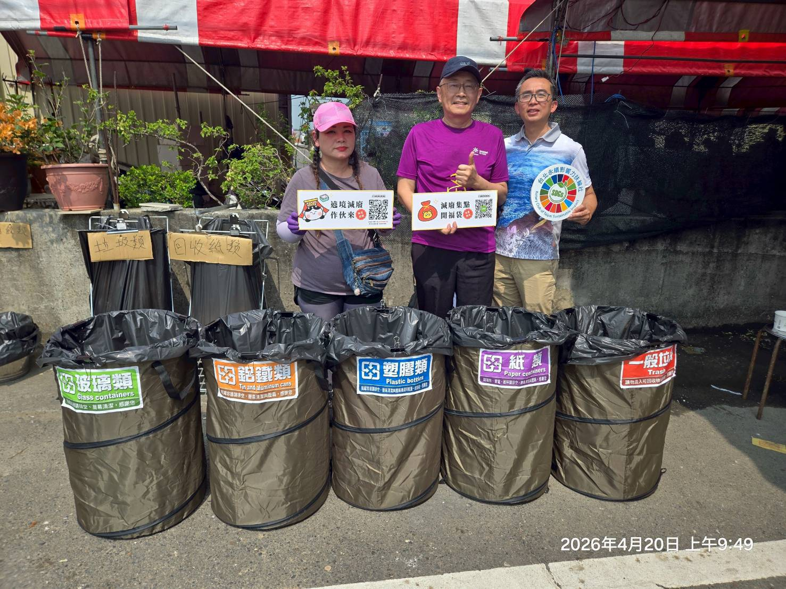
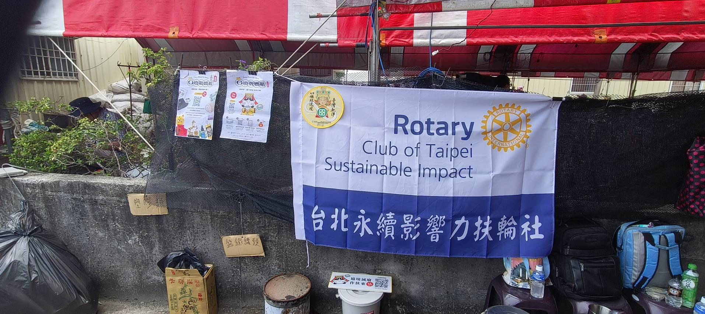
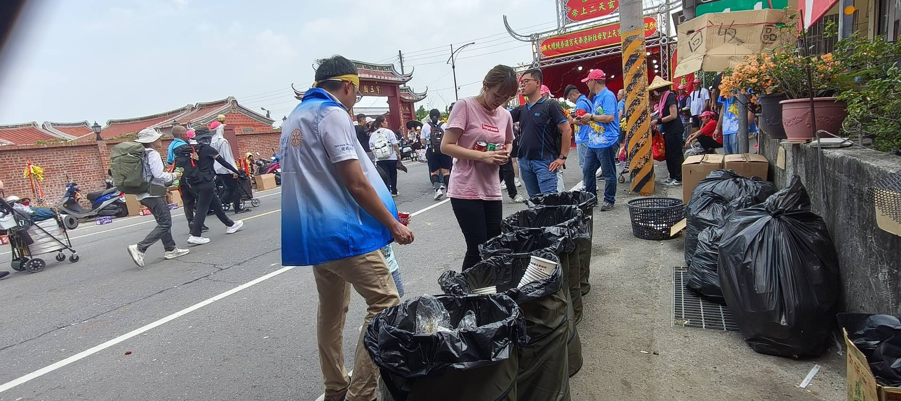
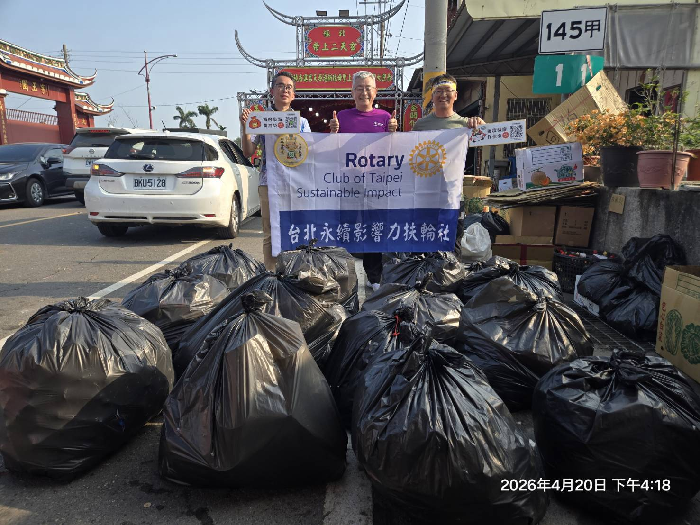

01
零廢敬媽祖
「零廢敬媽祖」是永力社推動的服務計畫之一。2026 年 4 月 20 日，永力社在新港奉天宮前最大點心站，做了一次正式的垃圾分類回收示範與成果統計。現場以紙碗作為主要推估基準，依各類回收物每 30 個的重量換算，整理出超過 2800 人次取餐與參與分類回收的量化結果。






這個點心站位在前往奉天宮的必經動線上，也是規模最大的取餐點之一，現場人流密集，回收量也因此很有參考性。永力社在這裡做的，除了把垃圾分開，更把分類成果用可追蹤的方式記下來，讓現場服務能被看見、被比較，也能被延續。
從統計結果看，自備餐具來取餐的人還不多，代表推廣習慣的工作還有空間。不過，因為有具體的回收動作與清楚的成果紀錄，現場也得到在地志工團的稱讚，主事者還主動加 Line，邀請永力社明年再來協助。
這次案例的價值，在於它把一場短時間、多人流的服務，轉成可說明、可統計、可對外分享的影響力樣本。對永力社來說，這就是報告書想留下的現場證據。
核心數字摘要
三個數字先看成果，再往下看結構。
總回收垃圾重量
194.22 kg
可回收再利用，含廚餘
123.75 kg (63.7%)
參與分類取餐
約 2800 人次
六類回收物重量比較
每條寬度依 70.47 kg 為 100% 換算。可回收類別以軟金與霧綠呈現，一般垃圾以 warm gray 區隔。
可回收與一般垃圾佔比
可回收再利用，含廚餘 123.75 kg，占 63.7%。一般垃圾 70.47 kg，占 36.3%。
可回收，含廚餘 123.75 kg，63.7% 一般垃圾 70.47 kg，36.3%
2026 年 4 月 20 日新港案例現場統計